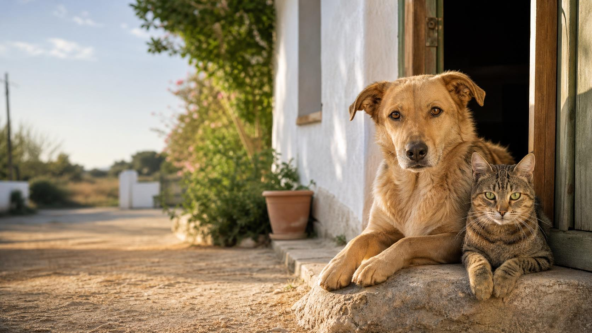

Ciudad Real · Desde 1994
Una segunda oportunidad empieza con un hola.
Rescatamos, cuidamos y encontramos familias para animales que solo necesitan volver a confiar.
280vidas a nuestro cuidado
cada día
cada día
Descubre La Bienvenida
Cada historia tiene su propia puerta.
Elige por dónde quieres empezar.
01
Adopta
Conoce a los animales que están esperando una familia.
Ver animales → 02Nosotros
Descubre quiénes somos y por qué trabajamos por ellos.
Conócenos → 03Cómo ayudar
Voluntariado, acogida y donaciones que cambian vidas.
Quiero colaborar → 04Contacto
Escríbenos o concierta una visita al refugio.
Hablemos →